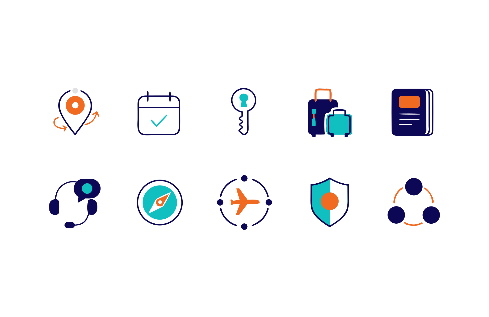
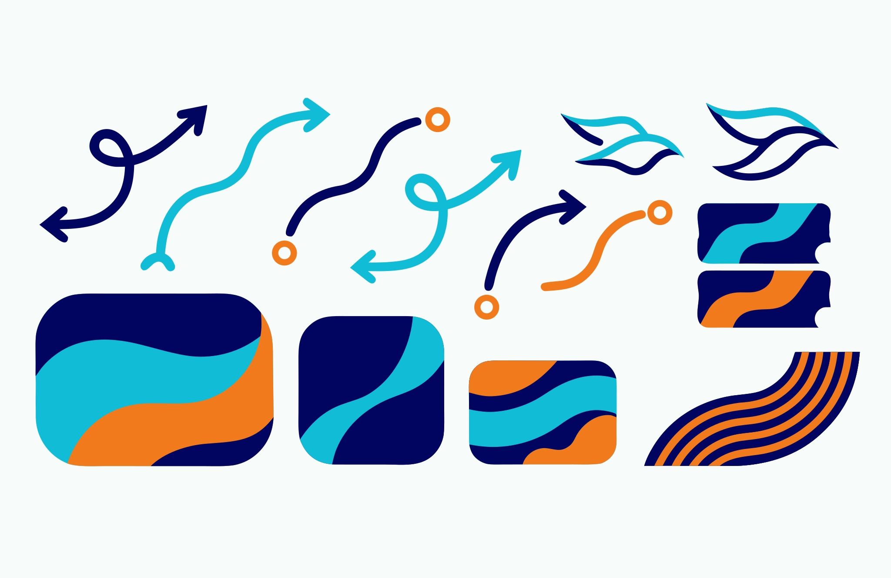
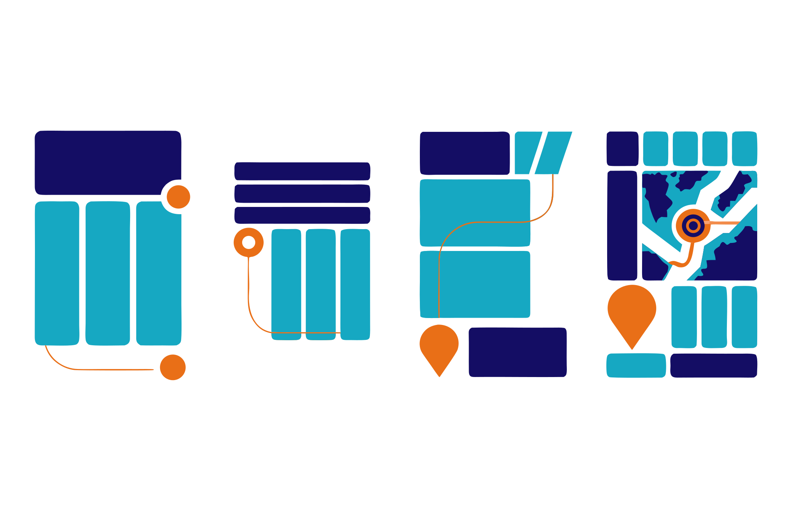

Conservar proporciones, contraste y espacio de protección.
BroWay Adventures · Identidad visual
Viajar con
dirección.
Un sistema que convierte la paloma, la ruta y el contraste en una identidad reconocible, flexible y fácil de aplicar.
Explorar el sistema ↘01Guía
02Movimiento
00 — Concepto
La paloma encuentra el camino.
La ruta lo hace visible.
La paloma representa viaje seguro, guía y paz. La curva naranja traduce ese significado en movimiento: una trayectoria que conecta el origen con la próxima parada.
ClaridadCercaníaConfianzaMovimiento
01 — Firma
El logo conduce
la mirada.
X
X
Principal · Bro azul / Way naranjaZona libre mínima: 1× altura de B
Rotar, comprimir, añadir sombras o recolorear por pieza.
180 px para la firma horizontal y 32 px para el favicon.
02 — Color
Contraste con
energía.
El azul construye confianza. El naranja marca acción y ruta. El turquesa abre aire y frescura.
Selecciona un color para copiar su HEX.
03 — Tipografía
Aa
Manrope
Una familia contemporánea y disponible para mantener consistencia en todos los equipos.
Display / 800Próxima
parada.
parada.
Titulares / 700
El viaje empieza con una decisión clara.
Texto / 400–500
Usa frases directas, información organizada y un siguiente paso concreto. La lectura debe sentirse ligera incluso cuando el contenido sea detallado.
Alternativas de sistema: Arial · Helvetica · sans-serif
04 — Iconografía
Señales para
orientar.
Biblioteca vectorial creada en Magnific para representar momentos reales del viaje con un mismo trazo y una misma lógica.

Destino
Itinerario
Alojamiento
Documentos
Asistencia
05 — Fotografía
Personas dentro
del viaje.
Momentos creíbles, luz natural y acción reconocible. La fotografía debe ayudar a imaginar la experiencia, no decorar un espacio.
- Gesto espontáneo y escala humana.
- Destino específico cuando sea relevante.
- Espacio negativo pensado para titulares.
- Color natural, sin filtros intensos.

Escenas que muestran una decisión, un encuentro o una experiencia.
Poses genéricas, saturación excesiva y fotografías sin relación con la oferta.
06 — Recursos gráficos
Una ruta nunca
es un adorno.

Un recorrido
Usar una sola ruta dominante por composición.
Puntos con sentido
Los nodos marcan origen, decisión o destino.
Marcos abiertos
El encuadre acompaña la imagen sin encerrarla.
Aire primero
La información conserva espacio para ser entendida.
07 — Composición
Jerarquía que se
reconoce.
Cada pieza tiene un foco, una ruta visual y una acción. La identidad aparece en la estructura antes que en la decoración.

Cartagena
en 4 días
Viaja con una ruta más clara.
Fechas, opciones y acompañamiento en un mismo lugar.
→DESTINO
Caribe
DURACIÓN
5 noches
08 — Archivos maestros
Un sistema listo
para crecer.
Los archivos se organizan por función para evitar versiones improvisadas.
01 Logo principal horizontal02 Logo vertical03 Símbolo y favicon04 Variación turquesa05 Biblioteca de iconos06 Rutas, marcos y recursos
SVGPDFPNGJPG